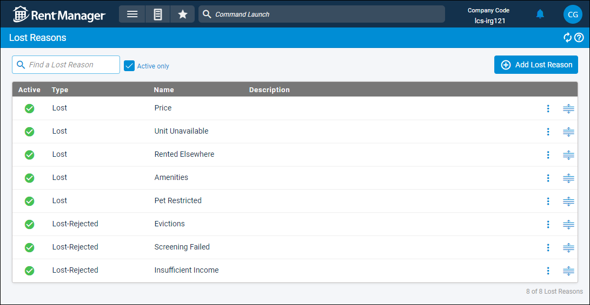

Source: https://rmxhelp.rentmanager.com/Topics/Express/CSH/Lost-Reasons.htm
Lost Reasons (Page)
If a prospect decides not to rent from you, or you reject a prospect's application, you can mark the prospect as lost or lost-rejected and select a reason that explains why the lead is considered lost. You can create custom reasons for why a prospect was lost on the Lost Reasons page.
To view a comprehensive overview of the reasons assigned to lost or lost-rejected prospects, you can generate the Lost Prospect Breakdown report.
Related Privileges
| Group | Privilege | Column |
|---|---|---|
| Tenants/Prospects | Manage Lost Reasons | Enabled |
For more information, refer to Control User Access.
To create and manage lost reasons, go to  arrow_forward Rental Info arrow_forward
arrow_forward Rental Info arrow_forward  Rental Info Setup arrow_forward Tenants/Prospects arrow_forward Lost Reasons.
Rental Info Setup arrow_forward Tenants/Prospects arrow_forward Lost Reasons.

Column Descriptions
The following columns are available on this page.
| Column | Description |
|---|---|
|
Active |
A |
|
Type |
Depending on which status the reason is available for, Lost or Lost-Rejected displays. |
|
Name |
The unique name of the lost reason. |
|
Description |
A short summary of the lost reason, such as when this lost reason should be used. |